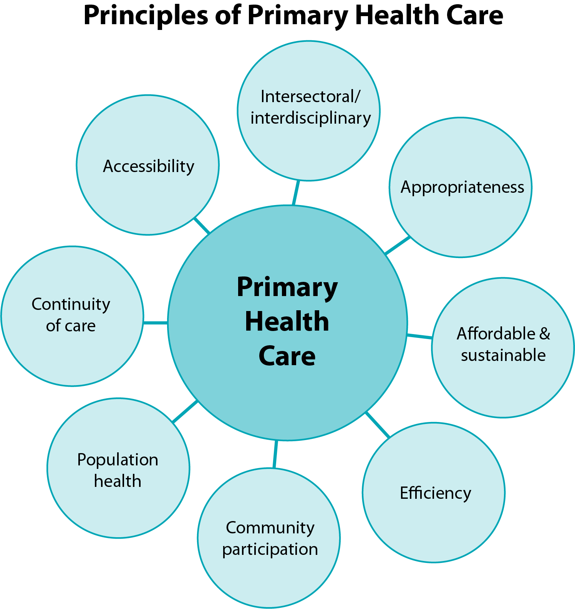

Original Blackboard item · _7400146_1
According to the World Health Organisation:
All people, everywhere, deserve the right care, right in their community. This is the fundamental premise of primary health care. http://www.emro.who.int/health-topics/primary-health-care/
Primary health care (PHC) addresses the majority of a person’s health needs throughout their lifetime. This includes physical, mental and social wellbeing and it is people-centred rather than disease-centred. PHC is a whole-of-society approach that includes health promotion, disease prevention, treatment, rehabilitation, and palliative care.
A primary health care approach includes three components:
By providing care in the community as well as care through the community, PHC addresses not only individual and family health needs, but also the broader issue of public health and the needs of defined populations.
The principles of Primary Health Care (PHC) cite a set of values and attributes that are most relevant to, and resonate with Indigenous Peoples and communities across the globe. The PHC model aims to deliver healthcare that is:

PHC, because it is about how best to provide health care and services to everyone, everywhere, is the most efficient and effective way to achieve health for all.
Primary health care is designed and intended as the ‘first contact’ a person has with the health care system in Australia. It should be the gateway to health care services for individuals, families and the community, where they develop a relationship with their general practitioner (GP) who can provide comprehensive and continuous care. Ideally for Indigenous Australians, PHC should enable access to GPs, Aboriginal and Torres Strait Islander Health Workers and Practitioners, nurses, allied health professionals, midwives, pharmacists and dentists. The services provided as part of primary health care are broad, and include health promotion and education, prevention and screening, early intervention, treatment and management (WHO, n.d.).
The principles of PHC were first outlined in the Declaration of Alma-Ata in 1978, a seminal milestone in global health. Forty years later, global leaders ratified the Declaration of Astana at the Global Conference on Primary Health Care which took place in Astana, Kazakhstan in October 2018.
Read these two historical documents for the full definitions and the core principles of Primary Health Care and Health Promotion:
Declaration of Alma-Ata International Conference on Primary Health Care, Alma-Ata, USSR, 6–12 September 1978
https://www.who.int/publications/almaata_declaration_en.pdf
Ottawa Charter for Health Promotion (Ottawa, 1986)
https://www.euro.who.int/__data/assets/pdf_file/0004/129532/Ottawa_Charter.pdf
Principle II (2) of the Declaration of Alma-Ata states:
The existing gross inequality in the health status of the people particularly between developed and developing countries as well as within countries is politically, socially and economically unacceptable and is, therefore, of common concern to all countries.
Reflect on this statement. Write down your reflections on how this applies to Aboriginal and Torres Strait Islander Peoples in Australia. Bring your reflections to contribute to the class discussion in this week’s tutorial, which considers how PHC and HP principles mirror Indigenous Peoples’ worldviews on health and wellbeing.
Activity Read: MyReading 6.1
Usher, K., Jackson, D., Walker, R., Durkin, J., Smallwood, R., Robinson, M., Sampson, U. N., Adams, I., Porter, C., & Marriott, R. (2021). Indigenous Resilience in Australia: A Scoping Review Using a Reflective Decolonizing Collective Dialogue. Frontiers in Public Health, 9, 630601. https://doi.org/10.3389/fpubh.2021.630601
From Intentions to Impact: The Limits of Good Will
Working with Indigenous communities requires moving beyond good intentions to critically examine how power, relationships, and structures shape engagement in practice.
Reflect:
Think about a time when an initiative or engagement was well‑intentioned but did not lead to meaningful or lasting change.
Declaration of Alma-Ata International Conference on Primary Health Care, Alma-Ata, USSR, 6-12 September 1978 The International Conference on Primary Health Care, meeting in Alma-Ata this twelfth day of September in the year Nineteen hundred and seventy-eight, expressing the need for urgent action by all governments, all health and development workers, and the world community to protect and promote the health of all the people of the world, hereby makes the following Declaration: I The Conference strongly reaffirms that health, which is a state of complete physical, mental and social wellbeing, and not merely the absence of disease or infirmity, is a fundamental human right and that the attainment of the highest possible level of health is a most important world-wide social goal whose realization requires the action of many other social and economic sectors in addition to the health sector. II The existing gross inequality in the health status of the people particularly between developed and developing countries as well as within countries is politically, socially and economically unacceptable and is, therefore, of common concern to all countries. III Economic and social development, based on a New International Economic Order, is of basic importance to the fullest attainment of health for all and to the reduction of the gap between the health status of the developing and developed countries. The promotion and protection of the health of the people is essential to sustained economic and social development and contributes to a better quality of life and to world peace. IV The people have the right and duty to participate individually and collectively in the planning and implementation of their health care. V Governments have a responsibility for the health of their people which can be fulfilled only by the provision of adequate health and social measures. A main social target of governments, international organizations and the whole world community in the coming decades should be the attainment by all peoples of the world by the year 2000 of a level of health that will permit them to lead a socially and economically productive life. Primary health care is the key to attaining this target as part of development in the spirit of social justice. VI Primary health care is essential health care based on practical, scientifically sound and socially acceptable methods and technology made universally accessible to individuals and families in the community through their full participation and at a cost that the community and country can afford to maintain at every stage of their development in the spirit of selfreliance and self-determination. It forms an integral part both of the country's health system, of which it is the central function and main focus, and of the overall social and economic development of the community. It is the first level of contact of individuals, the family and community with the national health system bringing health care as close as possible to where people live and work, and constitutes the first element of a continuing health care process. VII Primary health care: 1. reflects and evolves from the economic conditions and sociocultural and political characteristics of the country and its communities and is based on the application of the relevant results of social, biomedical and health services research and public health experience; 2. addresses the main health problems in the community, providing promotive, preventive, curative and rehabilitative services accordingly; 3. includes at least: education concerning prevailing health problems and the methods of preventing and controlling them; promotion of food supply and proper nutrition; an adequate supply of safe water and basic sanitation; maternal and child health care, including family planning; immunization against the major infectious diseases; prevention and control of locally endemic diseases; appropriate treatment of common diseases and injuries; and provision of essential drugs; 4. involves, in addition to the health sector, all related sectors and aspects of national and community development, in particular agriculture, animal husbandry, food, industry, education, housing, public works, communications and other sectors; and demands the coordinated efforts of all those sectors; 5. requires and promotes maximum community and individual self-reliance and participation in the planning, organization, operation and control of primary health care, making fullest use of local, national and other available resources; and to this end develops through appropriate education the ability of communities to participate; 6. should be sustained by integrated, functional and mutually supportive referral systems, leading to the progressive improvement of comprehensive health care for all, and giving priority to those most in need; 7. relies, at local and referral levels, on health workers, including physicians, nurses, midwives, auxiliaries and community workers as applicable, as well as traditional practitioners as needed, suitably trained socially and technically to work as a health team and to respond to the expressed health needs of the community. VIII All governments should formulate national policies, strategies and plans of action to launch and sustain primary health care as part of a comprehensive national health system and in coordination with other sectors. To this end, it will be necessary to exercise political will, to mobilize the country's resources and to use available external resources rationally. IX All countries should cooperate in a spirit of partnership and service to ensure primary health care for all people since the attainment of health by people in any one country directly concerns and benefits every other country. In this context the joint WHO/UNICEF report on primary health care constitutes a solid basis for the further development and operation of primary health care throughout the world. X An acceptable level of health for all the people of the world by the year 2000 can be attained through a fuller and better use of the world's resources, a considerable part of which is now spent on armaments and military conflicts. A genuine policy of independence, peace, détente and disarmament could and should release additional resources that could well be devoted to peaceful aims and in particular to the acceleration of social and economic development of which primary health care, as an essential part, should be allotted its proper share. The International Conference on Primary Health Care calls for urgent and effective national and international action to develop and implement primary health care throughout the world and particularly in developing countries in a spirit of technical cooperation and in keeping with a New International Economic Order. It urges governments, WHO and UNICEF, and other international organizations, as well as multilateral and bilateral agencies, nongovernmental organizations, funding agencies, all health workers and the whole world community to support national and international commitment to primary health care and to channel increased technical and financial support to it, particularly in developing countries. The Conference calls on all the aforementioned to collaborate in introducing, developing and maintaining primary health care in accordance with the spirit and content of this Declaration.
Ottawa Charter for Health Promotion
First International Conference on Health Promotion
Ottawa, 21 November 1986 - WHO/HPR/HEP/95.1
The first International Conference on Health Promotion, meeting in Ottawa this 21st day of
November 1986, hereby presents this CHARTER for action to achieve Health for All by the
year 2000 and beyond.
This conference was primarily a response to growing expectations for a new public health
movement around the world. Discussions focused on the needs in industrialized countries, but
took into account similar concerns in all other regions. It built on the progress made through
the Declaration on Primary Health Care at Alma-Ata, the World Health Organization's
Targets for Health for All document, and the recent debate at the World Health Assembly on
intersectoral action for health.
Health Promotion
Health promotion is the process of enabling people to increase control over, and to improve,
their health. To reach a state of complete physical, mental and social well-being, an individual
or group must be able to identify and to realize aspirations, to satisfy needs, and to change or
cope with the environment. Health is, therefore, seen as a resource for everyday life, not the
objective of living. Health is a positive concept emphasizing social and personal resources, as
well as physical capacities. Therefore, health promotion is not just the responsibility of the
health sector, but goes beyond healthy life-styles to well-being.
Prerequisites for Health
The fundamental conditions and resources for health are:
peace,
shelter,
education,
food,
income,
a stable eco-system,
sustainable resources,
social justice, and equity.
Improvement in health requires a secure foundation in these basic prerequisites.
Advocate
Good health is a major resource for social, economic and personal development and an
important dimension of quality of life. Political, economic, social, cultural, environmental,
behavioural and biological factors can all favour health or be harmful to it. Health promotion
action aims at making these conditions favourable through advocacy for health.
Enable
Health promotion focuses on achieving equity in health. Health promotion action aims at
reducing differences in current health status and ensuring equal opportunities and resources to
enable all people to achieve their fullest health potential. This includes a secure foundation in
a supportive environment, access to information, life skills and opportunities for making
healthy choices. People cannot achieve their fullest health potential unless they are able to
take control of those things which determine their health. This must apply equally to women
and men.
Mediate
The prerequisites and prospects for health cannot be ensured by the health sector alone. More
importantly, health promotion demands coordinated action by all concerned: by governments,
by health and other social and economic sectors, by nongovernmental and voluntary
organization, by local authorities, by industry and by the media. People in all walks of life are
involved as individuals, families and communities. Professional and social groups and health
personnel have a major responsibility to mediate between differing interests in society for the
pursuit of health
Health promotion strategies and programmes should be adapted to the local needs and
possibilities of individual countries and regions to take into account differing social, cultural
and economic systems.
Health Promotion Action Means:
Build Healthy Public Policy
Health promotion goes beyond health care. It puts health on the agenda of policy makers in all
sectors and at all levels, directing them to be aware of the health consequences of their
decisions and to accept their responsibilities for health.
Health promotion policy combines diverse but complementary approaches including
legislation, fiscal measures, taxation and organizational change. It is coordinated action that
leads to health, income and social policies that foster greater equity. Joint action contributes to
ensuring safer and healthier goods and services, healthier public services, and cleaner, more
enjoyable environments.
Health promotion policy requires the identification of obstacles to the adoption of healthy
public policies in non-health sectors, and ways of removing them. The aim must be to make
the healthier choice the easier choice for policy makers as well.
Create Supportive Environments
Our societies are complex and interrelated. Health cannot be separated from other goals. The
inextricable links between people and their environment constitutes the basis for a socio-
ecological approach to health. The overall guiding principle for the world, nations, regions
and communities alike, is the need to encourage reciprocal maintenance - to take care of each
other, our communities and our natural environment. The conservation of natural resources
throughout the world should be emphasized as a global responsibility.
Changing patterns of life, work and leisure have a significant impact on health. Work and
leisure should be a source of health for people. The way society organizes work should help
create a healthy society. Health promotion generates living and working conditions that are
safe, stimulating, satisfying and enjoyable.
Systematic assessment of the health impact of a rapidly changing environment - particularly
in areas of technology, work, energy production and urbanization - is essential and must be
followed by action to ensure positive benefit to the health of the public. The protection of the
natural and built environments and the conservation of natural resources must be addressed in
any health promotion strategy.
Strengthen Community Actions
Health promotion works through concrete and effective community action in setting priorities,
making decisions, planning strategies and implementing them to achieve better health. At the
heart of this process is the empowerment of communities - their ownership and control of
their own endeavours and destinies.
Community development draws on existing human and material resources in the community
to enhance self-help and social support, and to develop flexible systems for strengthening
public participation in and direction of health matters. This requires full and continuous
access to information, learning opportunities for health, as well as funding support.
Develop Personal Skills
Health promotion supports personal and social development through providing information,
education for health, and enhancing life skills. By so doing, it increases the options available
to people to exercise more control over their own health and over their environments, and to
make choices conducive to health.
Enabling people to learn, throughout life, to prepare themselves for all of its stages and to
cope with chronic illness and injuries is essential. This has to be facilitated in school, home,
work and community settings. Action is required through educational, professional,
commercial and voluntary bodies, and within the institutions themselves.
Reorient Health Services
The responsibility for health promotion in health services is shared among individuals,
community groups, health professionals, health service institutions and governments. They
must work together towards a health care system which contributes to the pursuit of health.
The role of the health sector must move increasingly in a health promotion direction, beyond
its responsibility for providing clinical and curative services. Health services need to embrace
an expanded mandate which is sensitive and respects cultural needs. This mandate should
support the needs of individuals and communities for a healthier life, and open channels
between the health sector and broader social, political, economic and physical environmental
components.
Reorienting health services also requires stronger attention to health research as well as
changes in professional education and training. This must lead to a change of attitude and
organization of health services which refocuses on the total needs of the individual as a whole
person.
Moving into the Future
Health is created and lived by people within the settings of their everyday life; where they
learn, work, play and love. Health is created by caring for oneself and others, by being able to
take decisions and have control over one's life circumstances, and by ensuring that the society
one lives in creates conditions that allow the attainment of health by all its members.
Caring, holism and ecology are essential issues in developing strategies for health promotion.
Therefore, those involved should take as a guiding principle that, in each phase of planning,
implementation and evaluation of health promotion activities, women and men should
become equal partners.
Commitment to Health Promotion
The participants in this Conference pledge:
to move into the arena of healthy public policy, and to advocate a clear political
commitment to health and equity in all sectors;
to counteract the pressures towards harmful products, resource depletion, unhealthy living
conditions and environments, and bad nutrition; and to focus attention on public health
issues such as pollution, occupational hazards, housing and settlements;
to respond to the health gap within and between societies, and to tackle the inequities in
health produced by the rules and practices of these societies;
to acknowledge people as the main health resource; to support and enable them to keep
themselves, their families and friends healthy through financial and other means, and to
accept the community as the essential voice in matters of its health, living conditions and
well-being;
to reorient health services and their resources towards the promotion of health; and to
share power with other sectors, other disciplines and, most importantly, with people
themselves;
to recognize health and its maintenance as a major social investment and challenge; and to
address the overall ecological issue of our ways of living.
The Conference urges all concerned to join them in their commitment to a strong public
health alliance.
Call for International Action
The Conference calls on the World Health Organization and other international organizations
to advocate the promotion of health in all appropriate forums and to support countries in
setting up strategies and programmes for health promotion.
The Conference is firmly convinced that if people in all walks of life, nongovernmental and
voluntary organizations, governments, the World Health Organization and all other bodies
concerned join forces in introducing strategies for health promotion, in line with the moral
and social values that form the basis of this CHARTER, Health For All by the year 2000 will
become a reality.
CHARTER ADOPTED AT AN INTERNATIONAL CONFERENCE ON HEALTH PROMOTION*
The move towards a new public health, November 17-21, 1986 Ottawa, Ontario, Canada
* Co-sponsored by the Canadian Public Health Association,Health and Welfare Canada, and the World
Health Organization